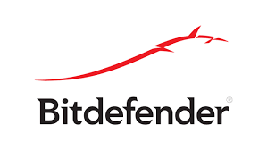
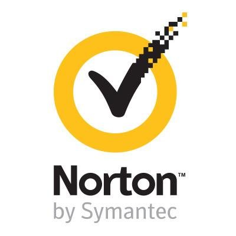
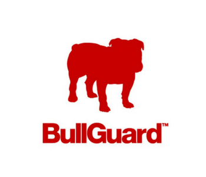

⠀
El primer virus ataco fue llamado Creeper, creado en 1972. este programa emitía en la pantalla el mensaje: "i´m a creeper… catch me of you can!" (soy una enredadera… agárrame si puedes).⠀
-El primer antivirus fue el Reaper conocido como “segadora”, fue creado para buscar y eliminar al virus de la red Creeper.⠀
⠀
-El primer virus malicioso que atacó a los ordenadores en 1974 en la forma del virus Rabbit, bautizado así por su velocidad. -En 1981 se creó el virus Elk Cloner, por Richard Skrenta, un estudiante de 15 años, a modo de broma. el virus estaba dirigido exclusivamente a sistemas Apple II. El mayor virus y el más devastador hasta ese momento que fue el Jerusalem⠀
El como instalar un antivirus es bastante sencillo solo tienes que buscar el que mas te llame la atencion.⠀
Algunos de los mejores antivirus son:⠀
BitDefender.⠀
⠀
Norton.⠀
⠀
Panda.⠀
⠀
TotalAV.⠀
⠀
Bullguard.⠀
⠀